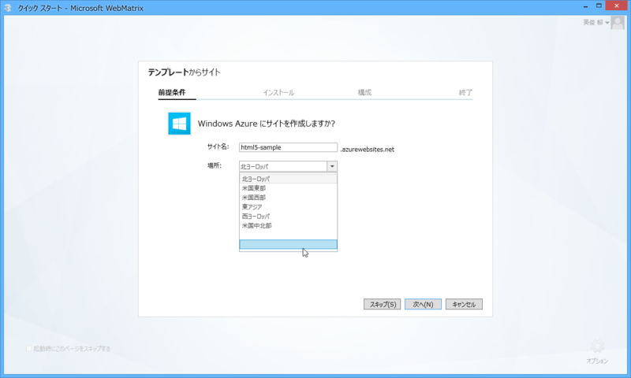
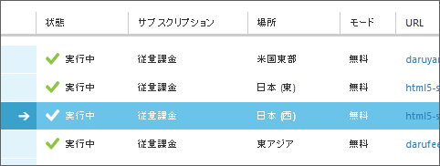

WebMatrix と Microsoft Azure 日本リージョン
執筆日時：
日本マイクロソフト株式会社（本社：東京都港区、代表執行役 社長：樋口 泰行）は、パブリッククラウドサービス「Microsoft Windows Azure」をユーザーに提供する、新たな主要リージョンを日本に展開することを発表します。この「日本リージョン」には、日本国内の2か所（首都圏と関西圏）のサブリージョンが含まれ、Windows Azure のサービスを国内のデータセンターから提供することを可能にします。
遅ればせながら、Windows Microsoft Azure の日本リージョン開設おめでとうございます。これで Azure の普及が日本でも進めばいいですね。

この日本リージョンですが、WebMatrix からでも利用できるみたいです。Windows Microsoft Azure にサイトを作成する際に現れるドロップダウンリストで“空白”を選びましょう。

この“空白”、二つありますが、手元で試してみたところ上が“日本 (西)”、下が“日本 (東)”みたいですね？ 違ったらごめんなさい。